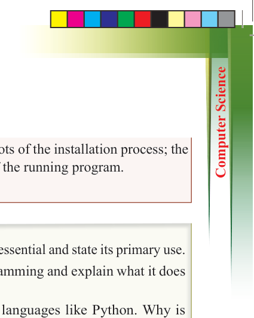
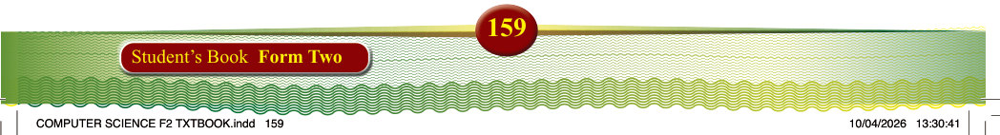
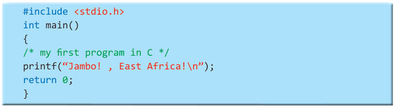

Deliverables: A short report containing screenshots of the installation process; the written C program code and output screenshot of the running program.
Document all your workings in a portfolio.
Exercise 4.1
1. Explain why the C programming language is essential and state its primary use.
2. Describe the role of the compiler in C programming and explain what it does to make the code executable on a computer.
3. Compare C programming with high-level languages like Python. Why is
C considered a low-level language and what benefits does this provide to
programmers?
4. List and explain at least three features of C that make it a good choice for writing operating systems or system-level software.
5. Explain how C programming has influenced the development of other
programming languages, such as C++ or Java. What fundamental programming
concepts have been carried forward?
Basic syntax and structure of a C program
Structure of a C program
A C program consists of the following parts: preprocessor commands, functions, variables,
statements and expressions, and comments. Observe the following simple code.

#include <stdio.h> int main()
{
/* my first program in C */ printf(“Jambo! , East Africa!\n”); return 0;
}
The following are the main parts of the program as referenced in that code:
(i) The first line of the program #include <stdio.h> is a preprocessor command,
which tells a C compiler to include stdio.h file before going to actual compilation.
(ii) The next line int main() is the main function where the program execution begins.